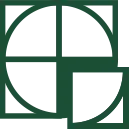

Diensten
Tuinontwerp
Een mooie tuin valt of staat bij een goed tuinontwerp...

Tuinaanleg
Het aanleggen van een tuin doe ik altijd vanuit dezelfde drive...
Tuinonderhoud
Een mooie tuin verdient het juiste onderhoud...
Zwemvijvers
Zwemvijvers is één van mijn grootste passies...